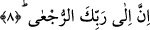

hikmete dayalı olarak kendi nefsine verilmiş olan bu ilahi isim ve sıfatların kendi mülkü
olduğu ve kendisinin de bunların maliki bulunduğunda bunların kemâlâtı ile kendini
beğenme durumuna düştüğüne ve böylece onları kendi nefsine koyan gerçek sâhibine
bakmayıp, kendini bundan müstağni gördüğüne, oysa bunların kendi nefsinde
bulunmasıyla insanoğlunun aklını çalıştırarak yaratıcısını bulması gerektiğine işâret
olunmaktadır.
8. Kuşkusuz dönüş Rabbinedir.
Âyette yer alan “er-rüc’a” rücû mânâsına masdardır. Sonundaki elif-i maksûra
müenneslik alâmetidir. Buna göre âyetin mânâsı; kuşkusuz dönüş senin işlerine malik
olan yaratıcınadır. Herkes öldükten sonra dirilmek sûretiyle başkasına değil sâdece
O’na dönecektir. Bu konuda başkasının ne müstakil olarak ne de müşterek olarak
Allah’ın yanında zerre kadar payı yoktur. Ey insanoğlu işte sen rabbine döndüğünde
azgınlığının akibetini göreceksin.
Orada mal, mülk değil amel işe yarar. Kemâl ehline göre zenginlik mal ile değildir.
Zira mal kabir kapısına kadardır, ondan sonrası artık amellere kalmıştır.
[161]. Âlûsi, XXX, 227
[162]. Buhari, bedu’l-vahy, 3
[163]. Buhari, bedu’l-vahy 3; tefsir (96), 1; Müslim, îman 252
[164]. İbn Hacer, İsabe, III, 643
[165]. Tefsiru Hadâıkı’r-rûh, XXXII, 151
[166]. Buhari, tefsir (96), 1; bedû’l-vahy 3; tabir 1; Müslim, îman 252; Müsned, VI,
233
[167]. Acluni, II, 173
[168]. Kurtubi, XX, 123